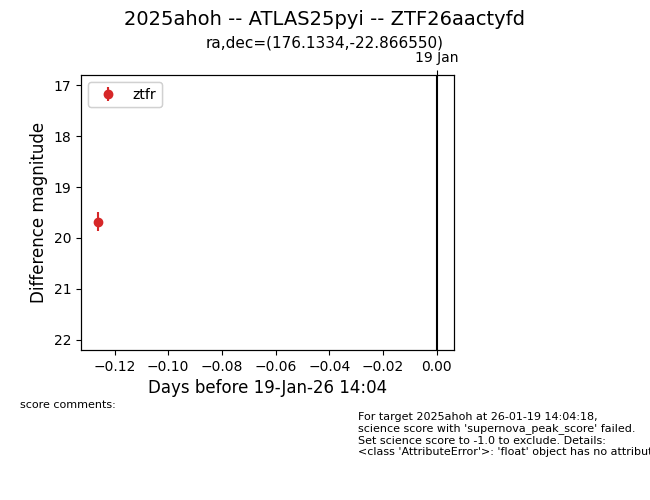
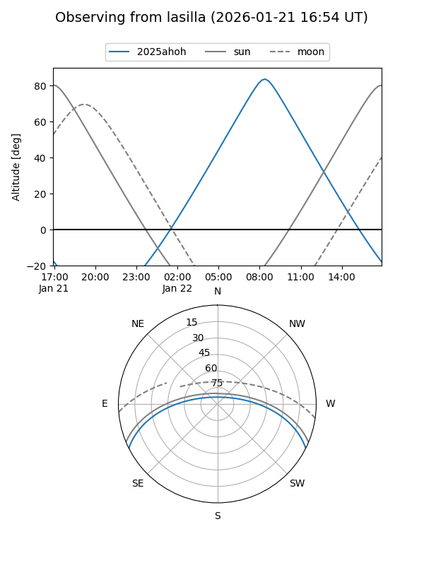
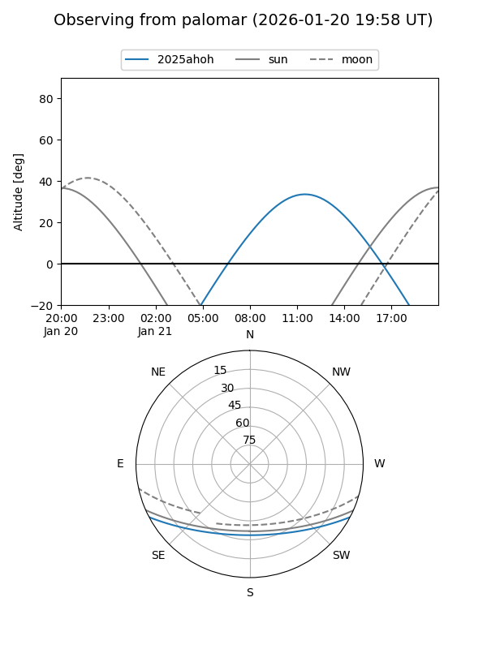

2025ahoh
Target 2025ahoh at 2026-01-19 14:05
Aliases and brokers:
FINK: link
Lasair: link
ALeRCE: link
TNS: link
YSE: link
alt names
ZTF26aactyfd (ztf,fink_ztf)
2025ahoh (tns,yse)
ATLAS25pyi (atlas)
Coordinates:
equatorial (ra, dec) = 176.1334,-22.86655
equatorial (HMS+DMS) = 11:44:32.01,-22:51:59.58
galactic (l, b) = (283.4166,+37.45673)
Flags:
Photometry:
last ztfr=19.68
1 ztfr detections
Lightcurve

Visibility


Additional plots